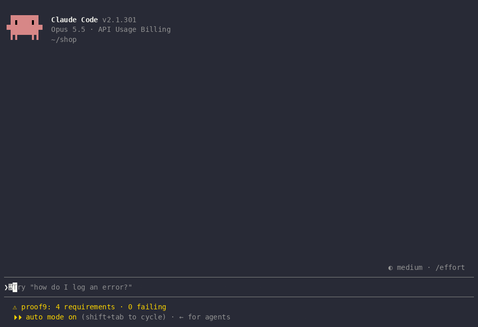

Your coding agent can’t quietly undo what you already decided.
Every bug you fix once, fixed forever: proof9™ records it as a requirement, locks it to the code it affects, and checks it before every commit. Regression memory for coding agents.
/plugin install proof9 --marketplace frankbria/codeframe
At a Claude Code prompt. It needs the cf CLI:
uv tool install codeframe-ai.

Who built it
Built by Frank Bria. Open source under Apache-2.0.
Proof of substance
Every check leaves evidence. See a sample evidence report
from the session above, made with cf proof export.
Read the code in the repository and what changed in each release in the changelog.
Limitations
CodeFRAME is in public beta (
0.9.7). The Golden Path CLI (cf init/prd/tasks/work/proof/pr) is stable enough to build on. Anything marked in progress in the roadmap is still moving, and on-disk.codeframe/formats may change between betas. Report rough edges.
Install
/plugin install proof9 --marketplace frankbria/codeframe
Then /proof to open the ledger. Full steps in the
README.